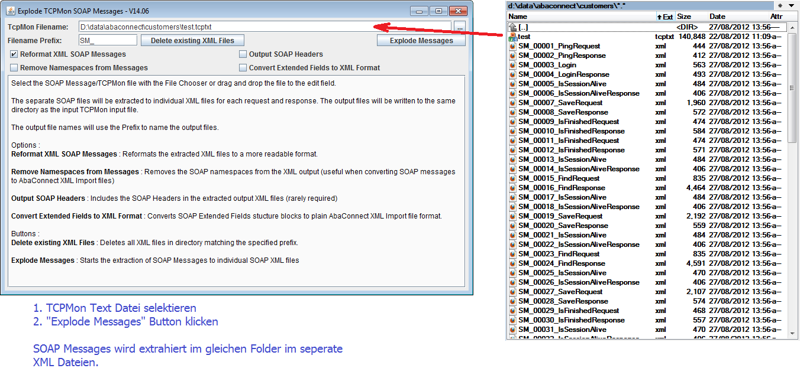

The following describes some basic usage of the Explode SOAP Messages utility.
This Utility explodes SOAP messages that have been saved in a text file.
The text file should contain all SOAP Request and Responses for a particular sequence.
The program can normally be started by double clicking the compiled JAR file in : build/explode_soap_messages_app.jar
If the java environment is not configured on the computer, the program can be started with the standard java command-line.
java -cp build/explode_soap_messages_app.jar ch.abacus.abaconnecttools.ExplodeTcpMonMessages
The following screen-shots show how the text file containing the SOAP Messages can be selected and the messages can be exploded
to the same directory as single SOAP requests and responses formatted in XML files.
